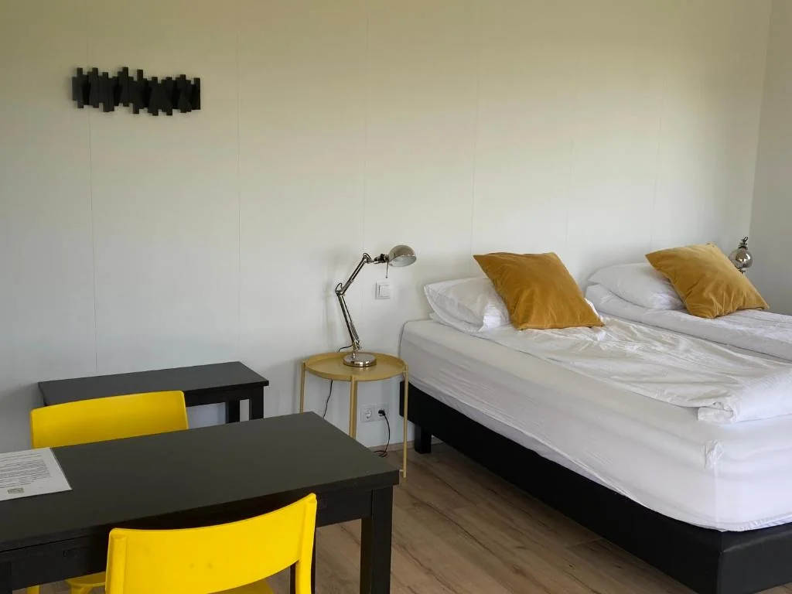
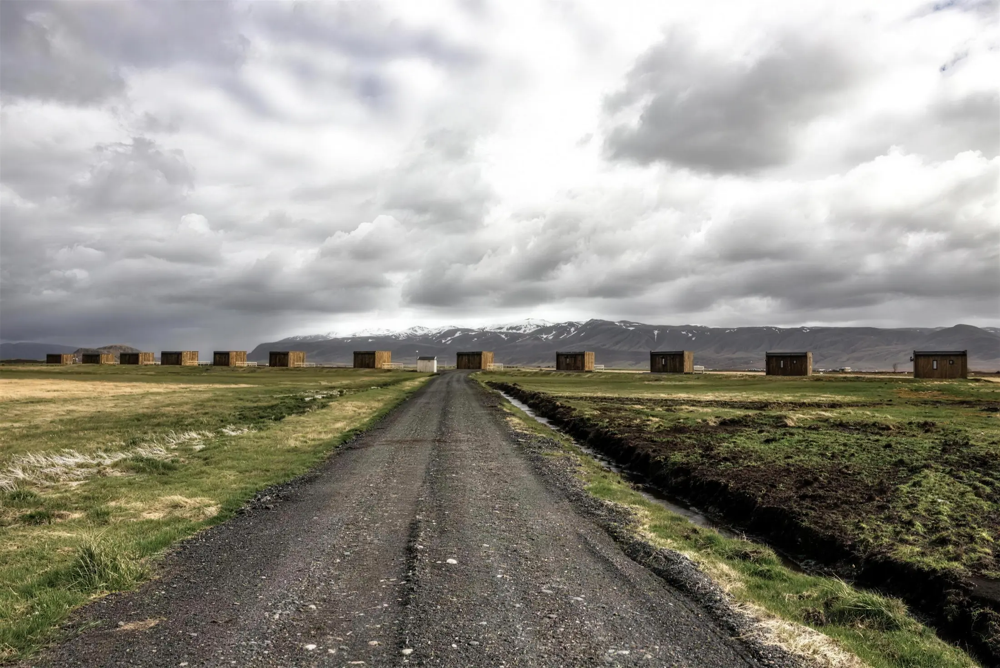
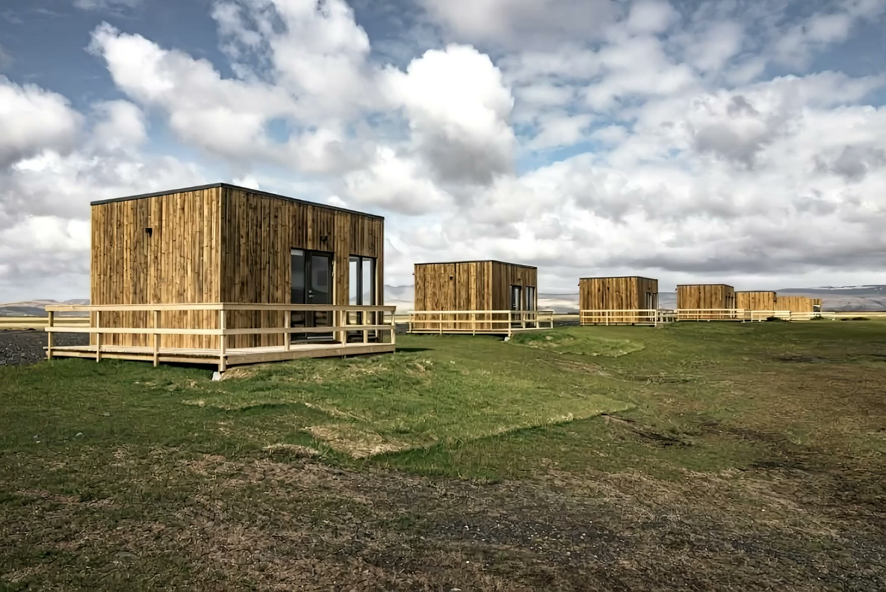
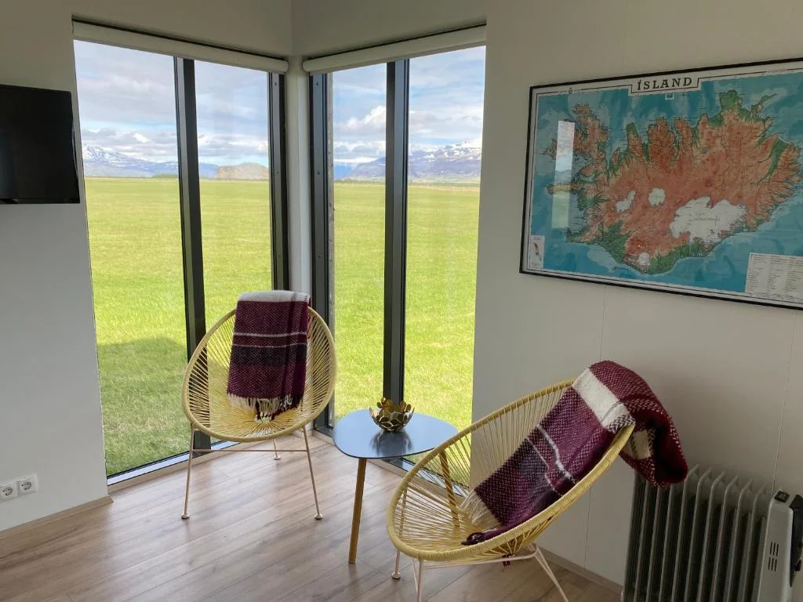
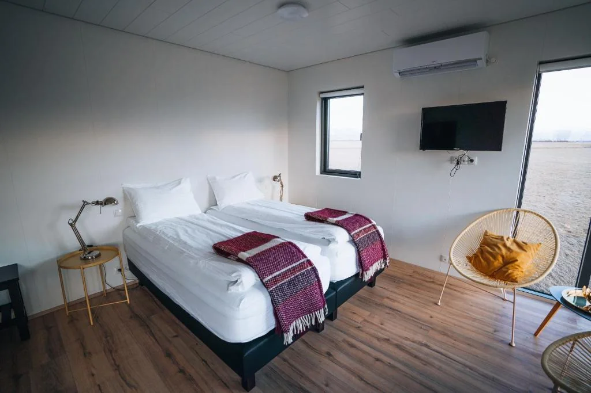
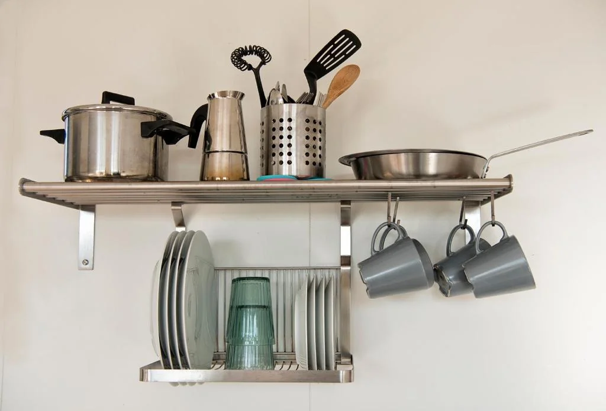
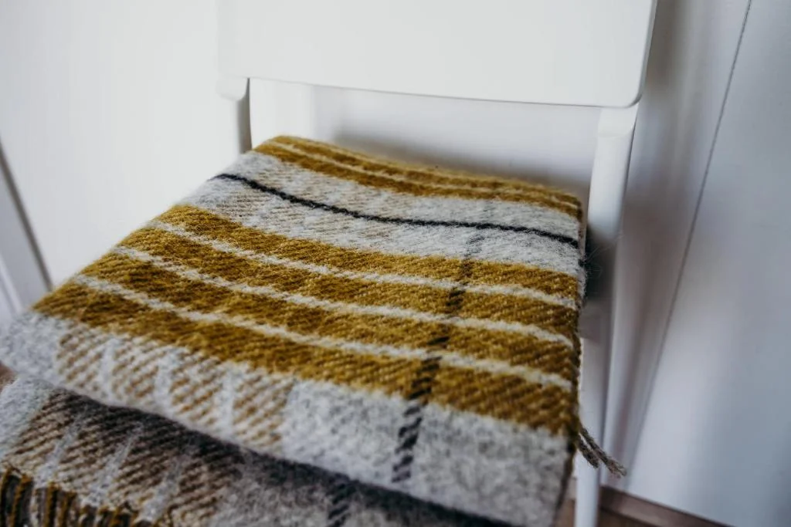
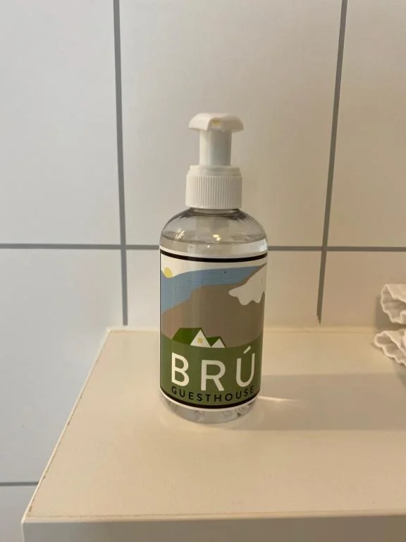
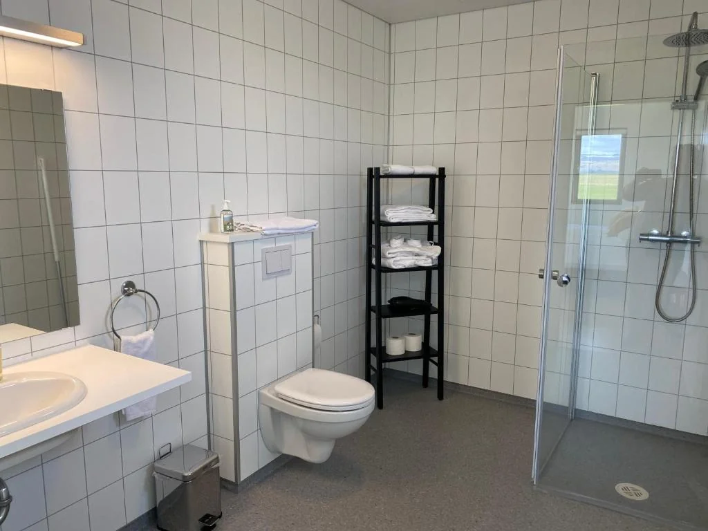
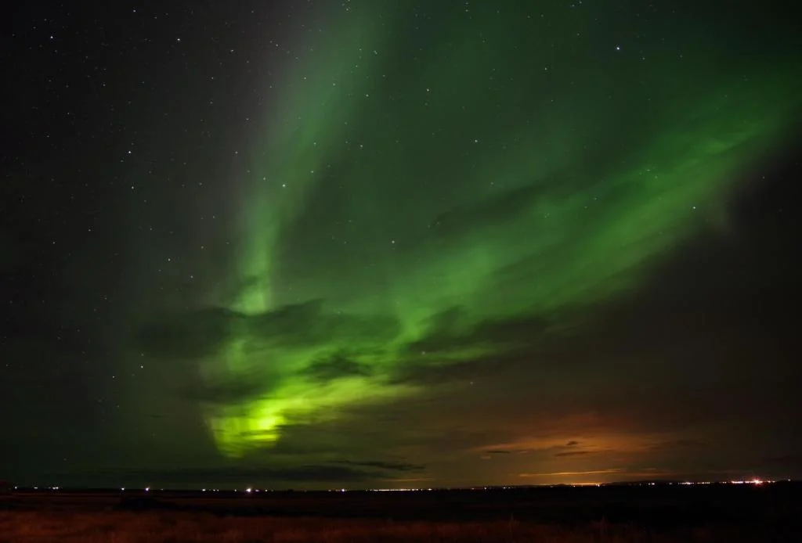

Standard
One room with a kitchenette, private bathroom, and a terrace facing the mountains.

South Iceland · 861 Hvolsvöllur
Twelve cottages on the plain, ten kilometres from Seljalandsfoss. Let yourself in whenever you arrive.
Book directWhere this is
Brú sits on the flat land east of Hvolsvöllur, with the mountains on one side and the sea air on the other. The cottages stand in a row along the track, far enough apart that you hear weather instead of neighbours.
Seljalandsfoss is ten kilometres away. Skógafoss, the black beach at Vík, the Golden Circle and the ferry to Vestmannaeyjar are all a morning's drive. Most people stay two or three nights and drive out in a different direction each day.

Afternoon on the plain
And then the lights come on
The cottages

One room with a kitchenette, private bathroom, and a terrace facing the mountains.

A separate bedroom and a living room with a sofa bed, kitchenette, and mountain-view terrace.

One large room with a kitchenette, ensuite, and a terrace over the plain. Same footprint as the Superior, laid out for two.





After dark
There is nothing between the terrace and the mountains, which is the point. On a clear night between September and April the sky over the plain does what people fly here to see.
You do not have to drive anywhere for it. Turn the lights off inside and stand on your own deck.
What guests say
Probably the best cottage I have ever been. And best location for northern light spotting.
The self check-in was flawless. The keys were in a box outside the cottage and the code came by email in advance.
A special shout-out to the owners, who took the time to track me down after I absentmindedly left our passports behind.
Each house seems rather small from the outside, but the inside is super cosy and has everything you might need.
Direct
Send us your dates and we answer by email, usually the same day. No booking fee, and you are talking to the people who own the place rather than a platform.
Find us
Off the ring road east of Hvolsvöllur. Ten kilometres to Seljalandsfoss, about ninety minutes from Keflavík airport.
Check in from 16:00, out by 11:00. Check-in is self service: we email you the door code the day before, so it does not matter what time you arrive.
Brú, 861 Hvolsvöllur 659 4005 info@bruguesthouse.is